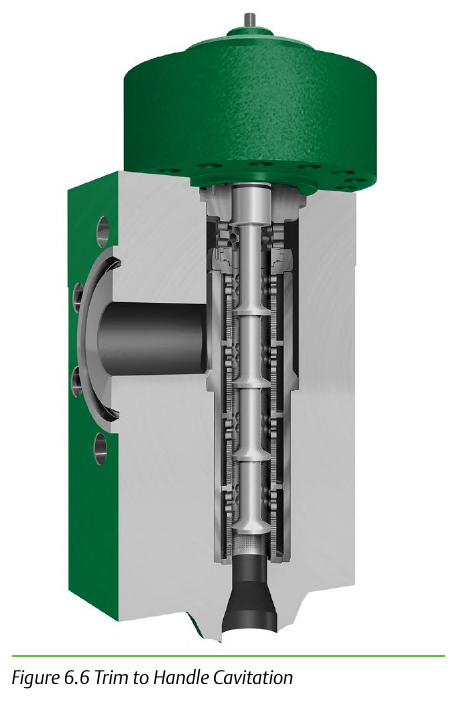

Multi-Stage Anti-Cavitation Trim (DST-Style)

- 1Rated to a 4200 psid pressure-drop ceiling
- 2Exists for the range where a standard single-stage trim would cavitate destructively
- 3The 4200 psid figure is the design's stated operating limit, not a marketing number
Control Valve Handbook, 6th ed., Fig. 6.6. Component Index: cvh-cmp-cavitation-trim-cutaway.